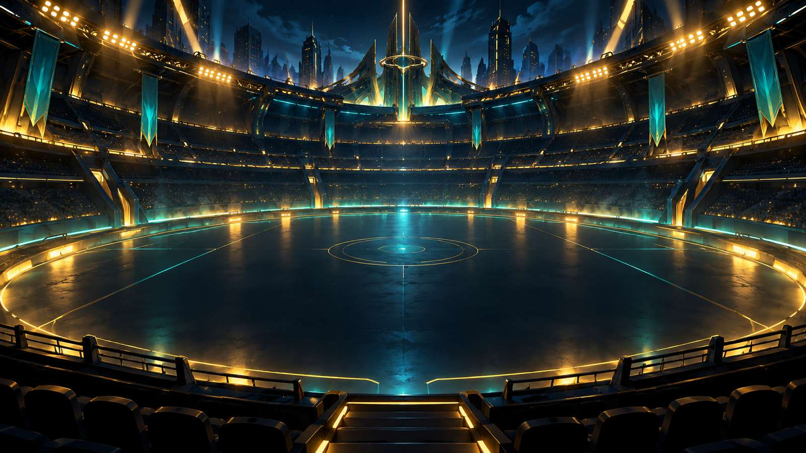

Each right answer hits the boss. A "not yet" costs one shield. If your shields run out the boss escapes — but every bit of damage you did stays. Nobody beats a boss first time. Everybody beats them eventually.
Your XP, belts and badges are saved to the cloud, so you can carry on on any iPad.